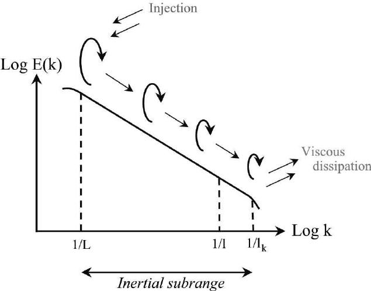

Environmental Fluid Dynamics: Turbulence

Objective
My Master's thesis research focuses on understanding the patterns, strength, and secondary effects of turbulence at the head of La Jolla Canyon, an underwater canyon located just off the coast of La Jolla Shores, CA. Turbulent mixing is a crucial process in coastal oceanography, influencing nutrient distribution, pollutant transport, and marine ecosystem dynamics. It also drives coastal upwelling, contributing to the local environment and adding a piece to the puzzle for global thermohaline circulation closure.
The head of La Jolla Canyon is located quite close to the shore of the ocean, nearly in the surf zone, so the dynamics of the flow are more complicated than other sites. I aim to calculate turbulent dissipation (the mixing rate or "strength" of turbulence) in the head using multiple instruments and methods. I will also show how flow through the canyon and turbulence can be visualized.
Location

Picture of La Shores taken from a nearby trail. (by me)

LJ Canyon Bathymetry overlayed on satellite image. Source

LJ Canyon Bathymetry, green and purple markers show instrument deployment locations.
How Turbulence is Measured
We measured turbulent dissipation using four different methods: velocity spectra, structure functions, Thorpe scale analysis, and temperature spectra. Each method involves constructing a data pipeline:
1. Raw data is quality controlled
2. Turbulence theory is applied to extract dissipation rates
3. Results are further quality controlled
4. Final results are visualized and compared to other methods or expected values.
Before looking at data collection and results, one must understand how these methods work at the fundamental level. This is an expansive (and actively growing) field of research, but I will provide a very basic explanation. Three of the four methods: velocity spectra, structure functions, and temperature spectra, all operate under the same umbrella of the inertial subrange. Turbulence naturally drives an energy cascade from large size structures to smaller ones. It works to take large eddies, or swirling motions, and break them down into smaller and smaller eddies, up until they are so small that viscous forces dissipate them into heat. Stronger turbulence will perform perform this cascade more quickly, allowing for more rapid mixing or other effects (like stirring coffee rapidly vs. slowly) The three aforemenionted methods aim to observe this energy cascade.
{kind=link}

The energy cascade, energy is input on the left at large length scales and dissipated on the right at small length scales. The inertial subrange lies between them. Source
The energy cascade can be divided up into stages, the first being the production phase, where turbulent energy is injected into the system, and the flow is largely dependent on the geometry around it. The final stage is viscous dissipation, where friction in the fluid becomes the dominant force and reduced the turbulence to heat, leaving quiescent body. In between these two stages is the inertial subrange. This region is special because it assumes that the turbulence has broken down far enough to have "forgotten" all of it's geometrical characteristics, or the turbulence is purely isotropic. This is beautiful because any turbulence, whether it came off an airplane or a tidal bore at the bottom of the ocean, will essentially look the same in the inertial subrange. Another benefit of this region is that energy transfer is purely a function of turbulent dissipation, the fluid viscosity or other parameters are not relevant. By making observations of the inertial subrange, the rate of energy transfer can be directly found.
Velocity and temperature spectra both show huch energy is contained at a specific frequency, which can be translated into a length scale using Taylor's frozen flow hypothesis. If we can measure the proper frequency range, we can infer how quickly the energy is decaying to smaller length scales and thus the turbulent dissipation rate. We are essentially observing turbulence smoothing out variations in velocity and temperature. Structure functions also use the inertial subrange, but instead are looking at how velocity uncorrelates from itself. Within isotropic turbulence, the velocity should decay at an expected rate
Thorpe scale analysis is a different, but a little more intuitive.In the ocean, the water temperature gets denser as you go deeper. As mentioned before, turbulence is essentially a swirling motion, if it is in the ocean, it will take more denser fluid and flip it over lighter fluid. This creates an instability, leading to mixing. Using temperature sensors arranged in a vertical line